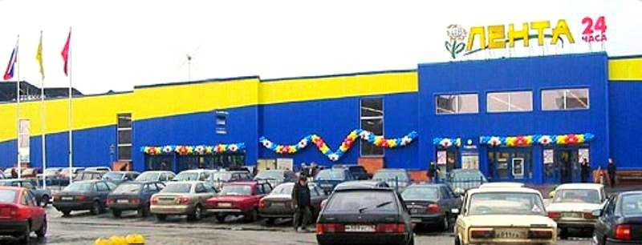
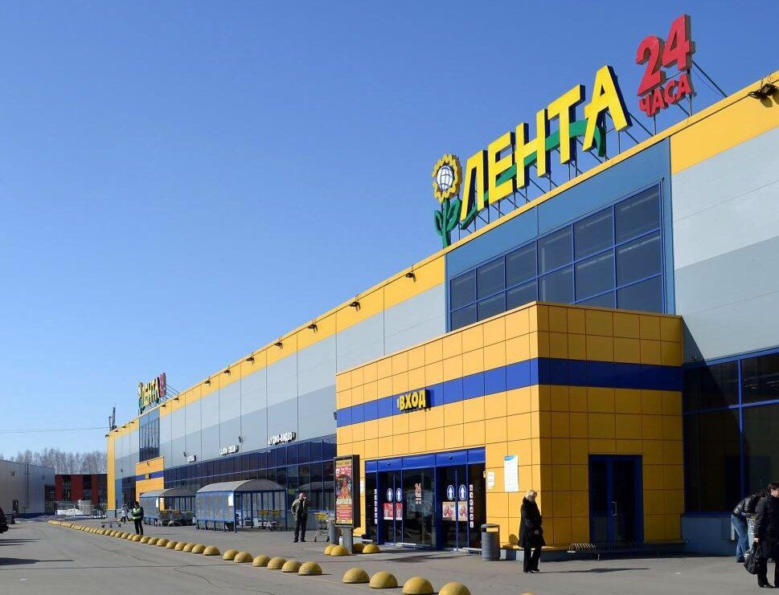

О компании
История создания гипермаркета "Лента"
Первый гипермаркет

В 1999 году компания принимает решение о переформатировании сети магазинов и открывает первый торговый центр в формате Cash & Carry, однако и этот гипермаркет был небольшой по площади — 2700 м². Существовавшие на тот момент магазины были закрыты. В последующие семь лет было открыто ещё восемь гипермаркетов в Санкт-Петербурге.
Открытие гипермаркетов в других городах
Миссия и ценности
МАСТЕРСТВО и ОТВЕТСТВЕННОСТЬ
СКОРОСТЬ и ЦЕЛЕУСТРЕМЛЕННОСТЬ
ФОКУС НА КЛИЕНТА
УВАЖЕНИЕ и ЗАБОТА
КОМАНДНАЯ РАБОТА
Что на данный момент?
- Сервис «Лента Онлайн» запустил круглосуточную доставку;
- После реконструкции открыт гипермаркет в Томске;
- Компания открыла первый тест-центр СТМ в Санкт-Петербурге;
- Запуск доставки для корпоративных клиентов;
- Внедрена технология мультипикинга при сборке онлайн-заказов;
- Общее количество магазинов достигло 820, включая 259 гипермаркетов и 561 магазин малых форматов;
- Более 26 млн лояльных покупателей.

По состоянию на 31 марта 2023 года под управлением «Ленты» находилось 259 гипермаркетов, 568 супермаркетов и магазинов «Мини Лента» общей торговой площадью почти 1,79 млн кв. м в более чем 200 населённых пунктах России. Средняя торговая площадь одного гипермаркета «Ленты» составляет около 5 500 кв. м, средняя площадь супермаркета – 800 кв. м, средняя торговая площадь магазинов формата «Мини Лента» – 500 кв. м. Компания располагает 14 распределительными центрами по всей России. В 2022 году выручка «Ленты» составила 537 млрд руб. (около 7,6 млрд долларов США).
Ключевые факты о сети гипермаркетов "Лента"
- Ведущий многоформатный продуктовый и FMCG-ритейлер в России;
- Более 50 тысяч сотрудников;
- 537 млрд ₽ продаж в 2022 г.;
- 259 гипермаркетов и 561 супермаркет и магазин «Мини Лента» общей торговой площадью более 1,79 млн кв. м в более чем 200 населенных пунктах России;
- Экспресс-доставка и сервис заказа онлайн с самовывозом из всех гипермаркетов;
- Более 1,79 млн кв.м. торговых площадей;
- Более 26,59 млн активных держателей карт лояльности.